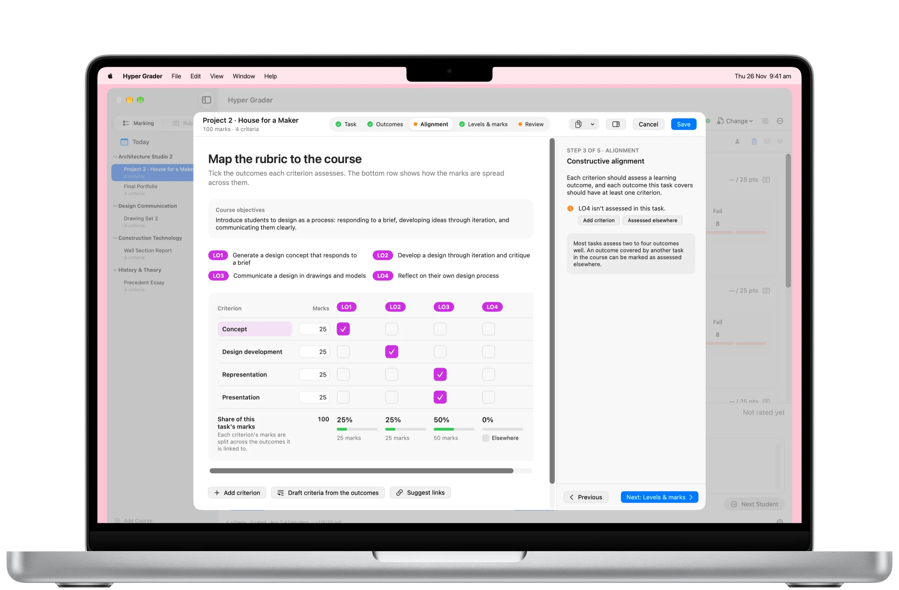
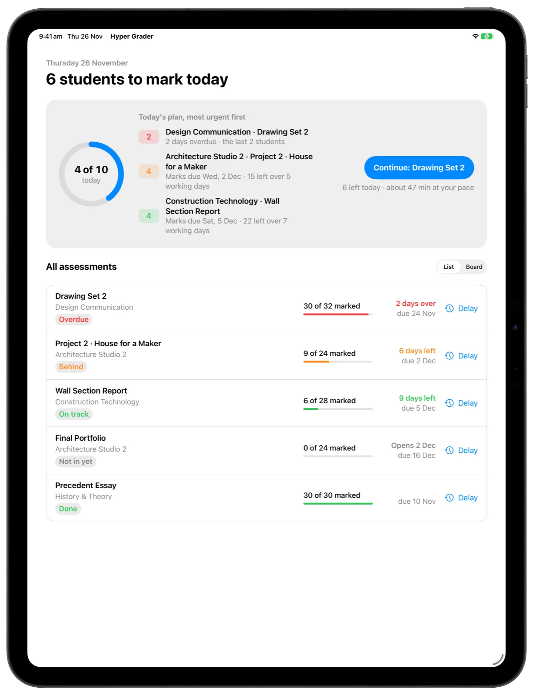
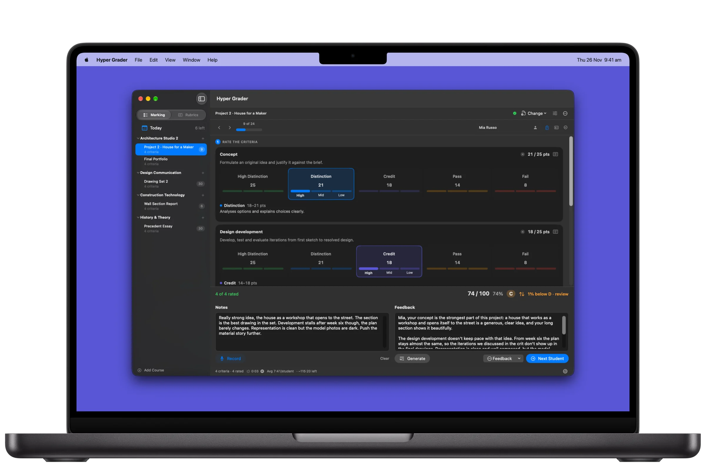

a marking app for mac and ipad · it all runs on your device
say it, mark it, move on.
Rate each criterion, talk through what you see, and Hyper Grader writes the feedback in your words, right there on your Mac or iPad. When the class is done, marks and comments go back to Canvas in two file uploads.
join the beta see how it works
Marking shouldn't feel like a chore.

your words, ums and all
from spoken notes to feedback
what you said
Okay, Hana. Um, the concept's really strong, like, a workshop that opens to the street. Love the section. Uh, development stalls after week six. The model photos are, ah, way too dark. Presentation's fine.
what Hana reads
Hana, your concept is the strongest part of this project: a house that opens itself to the street as a workshop, and your section shows it beautifully.
Development slows after week six, so the plan barely changes. Re-shoot the model in daylight so the timber reads, and show how the plan evolved. Those two changes would lift this into Distinction territory.
The feedback makes your points with your judgement. Hyper Grader drops the ums and turns "way too dark" into advice a student can act on. It's written on your Mac by Apple's on-device model, and you can edit every word before it goes anywhere. Turn on Improvement focus and each piece of feedback ends with specific next steps, so it feeds forward into the next task.
today
days from submission to marks due
Add the date students submit and Hyper Grader sets the marking deadline fourteen days later (you can change that), then spreads each class over the working days left.
The start screen says how many to mark today, most urgent first, and how long that should take at your usual pace. Running behind? Take something off today's plan, or push its deadline when you've given an extension.


marking
the marking screen

- pick a band Choose a grade band for each criterion, then High, Mid or Low within it. The arrow keys jump between bands, and your total and grade update as you go.
- say what you see Hit Record and talk while you look at the work. Dictation uses Apple's on-device speech recognition, so nothing you say is uploaded.
- check the line A total within 2% below the next grade gets flagged, so you can decide whether it should go up.
rubrics · built on constructive alignment
the rubric builder
It starts where constructive alignment starts: with your course. Five steps take you from the task to a criterion-referenced rubric, with a guide beside each one that explains what makes it good and offers fixes as you go.
- 1task Type, level, weight and student hours, plus what students should be able to show.
- 2CLOs Paste the course objectives and learning outcomes from your outline.
- 3alignment Map each criterion to the CLOs it assesses, and see each CLO's share of the marks.
- 4levels A descriptor for every grade band, High Distinction to Fail.
- 5review Coverage, Bloom's taxonomy and policy, checked before you mark.


before you mark a single piece of work
- Every CLO assessed here or in another task
- No CLO carrying more than half the marks
- A spread of Bloom's levels, so students create and evaluate rather than only remember
- A descriptor for every level, describing quality rather than quantity
- Course weight between 5 and 60%
- Three to six criteria
- Group work at no more than 30%, and hurdles flagged
- Student hours against the workload guideline
canvas
works with canvas
No integration and no API token, so there's nothing for your school or uni to approve. It works with the files Canvas already exports and imports.
- gradebook exportGrades-ARCH_3010.csv
- rubricStudio Proposal rubric.csv
- class listTutorial ST02 class list.csv
- for the gradebookmarks for every student
- for the rubricyour comment on every criterion
Drop in your gradebook export, rubric and class list together. Hyper Grader sets up each assignment with its class, and tells you when you've picked the wrong file. When you're finished, Send to Canvas writes two files to upload. Other learning systems will follow.

ipad · in testing
marking on ipad

Writing feedback and sending to Canvas stay on the Mac. Syncing the two is being built now.
on your device
it all happens on your mac or ipad
- dictation Apple's on-device speech recognition.
- feedback Written by Apple's on-device model.
- student work Your notes and marks never leave the device.
- your own model Add a Claude API key if you like. Hyper Grader asks before anything is sent, swaps student names for placeholders, and lets you stop at any time.

other features
- student finder Search your class by name, open anyone's marking, or delete a record you no longer need.
- consistency check Read across a whole cohort's feedback for mismatched scores and tone.
- student profiles See each student's marks and feedback across assessments.
- your grade scale Standard Adelaide bands, or import your own marking scheme.
- keyboard first Next student with ⇧⌘↩, generate with ⌘↩, record with ⌘R.
- dark mode For marking after hours.
join the beta
Hyper Grader is in TestFlight for macOS 26 and later. If you mark rubric-based work and want to try it, send me a note.